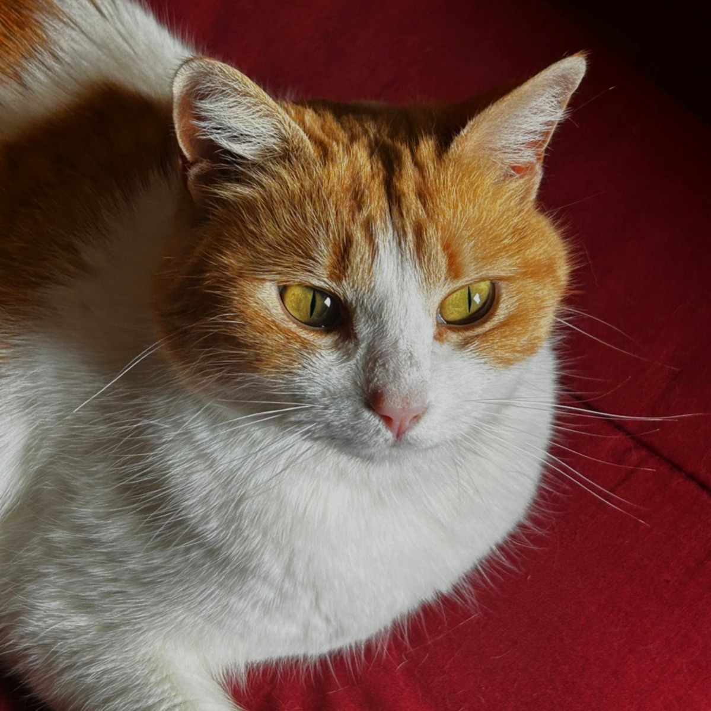

Quién soy.

Tengo 29 años, soy de San Luis, y estoy terminando ingeniería civil mientras dirijo obras al mismo tiempo. Co-fundé Metcon SAS con mi hermano — una constructora chica que arrancamos con ganas de hacer las cosas de otra manera. Actualmente estoy a cargo del cierre perimetral del Parque Industrial Norte, que empezó en enero de este año.
En paralelo a todo eso, escribo. Tengo un manuscrito en progreso que se llama Cuantificados — es sobre productividad, biología humana y lo que pasa cuando le ponés números a todo. No sé muy bien qué es todavía, pero ya tiene 42.000 palabras así que algo es.
También hago música. Vox Futura es el proyecto, ambientale-electrónica, sin mucha prisa. Vengo de tocar batería, y la producción es la forma que encontré de seguir haciendo ruido sin molestar a los vecinos a las 2 AM.
Y programo. No soy desarrollador de profesión, pero construí las herramientas que uso en obra: parte diario, control de maquinaria, presupuestos. Aprender a programar para resolver mis propios problemas fue la mejor decisión que tomé en los últimos años.
Esta página es básicamente un lugar donde junto todo eso. No tiene más intención que esa.